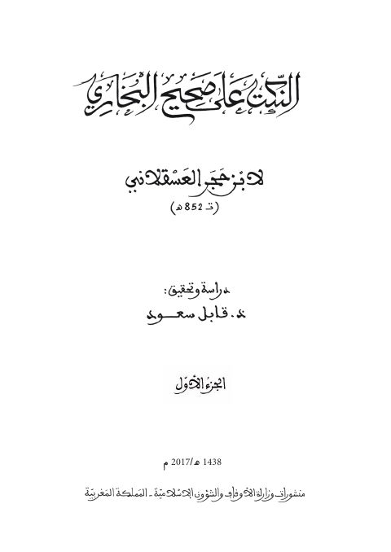

Downloads need an internet connection.
النكت على صحيح البخاري
Authors: أحمد بن علي بن حجر العسقلاني
Editors: قابل سعود
Publishers: وزارة الأوقاف والشؤون الإسلامية المغربية
**▫️ العنوان: النكت على صحيح البخاري** ▪️ المؤلف: #ابن_حجر_العسقلاني ▫️ المحقق: #قابل_سعود ▪️ الناشر: #وزارة_الأوقاف_والشؤون_الإسلامية ▫️ تاريخ النشر: 1438هـ 2017م ▪️ بلد النشر: الرباط، #المغرب ▫️ الطبعة: 1 ▪️ عدد الأجزاء: 2 ▫️ الصفحات: 994 ▪️ نوع الوعاء: #كتاب ▫️ التصنيف الرئيسي: #الحديث_وعلومه ۪